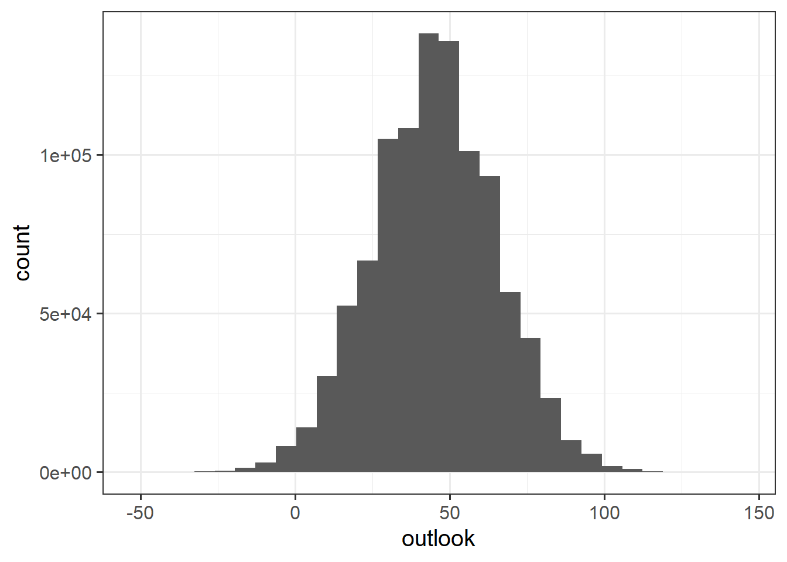

W8: Sampling Distributions & Standard Error
Pick someone new to be the driver this week. If everyone in the group has already had a week as the driver, start going round again!
The driver will type the code. The rest of you are navigators, you need to tell the driver where to go (i.e., what to type!).
Driver instructions:
- Log in to the bigger screen at your table
- Open RStudio Server
- Listen to your navigators
Navigator instructions:
- Tell your driver where to go (i.e., what to type)!
Question 1
For the exercises this week, we are going to assume that the distribution of outlook scores (pessimism/optimism measured on the -100 to 100 scale) for the wider population has a mean of 45 and a standard deviation of 20.
So if we could ask every person in the world to fill out our questionnaire, we would see something like this:
We can generate a pretend sample of outlook scores by using the rnorm() function.
Try playing around with this code. Run each line a couple of times to see how the output changes.
[1] 33.9 44.6 35.3 50.7 58.9 45.2 59.4 41.1 46.4 56.2 44.5 45.1 33.8 56.1 53.8
[16] 81.2 59.3 41.2 15.9 14.1[1] 45.8Important Note: None of this is real data. When we do real research, we won’t know what the distribution looks like in the wider population, and we won’t be able to make pretend samples. We’re doing this here because it is a useful exercise to help demonstrate how sampling variability works.
Question 2
From the previous question, you have hopefully noticed 3 things:
- We can make a pretend sample using
rnorm().
- Each time we do 1, we get a new, different, sample.
- Each time we do 1, the new sample we get has a slightly different mean.
What we now want to start thinking about is “all the samples we could have taken”, and how their means will vary.
The function replicate() can let us do something in R lots of times.
Can you figure out what these two lines of code do?
Raise your hand if you want a tutor to come and help explain.
means20 <- replicate(1000, mean(rnorm(n = 20, mean = 45, sd = 20)))
means100 <- replicate(1000, mean(rnorm(n = 100, mean = 45, sd = 20)))
Question 3
The objects we made in the previous question are “vectors”. Unlike the dataframes we normally work with, these don’t have rows and columns, they just have one dimension.
In order to plot them, it would help to put them into the row,column format. We can make a dataframe in R using the tibble() function.
Inside tibble(), we give names of variables and the values we want those variables to take:
mydata <-
tibble(
variable_name = values,
variable2_name = values,
...
)Make two dataframes, one for each of the values in means20 and means100.
🗂️ See flashcard flash card.
Hint
Because the means20 and means100 are vectors, that means they are just a bunch of values. Which means we can follow this logic:
myvector <- c(1,2,5,7,3,5)
mydataframe <-
tibble(
thing = myvector
)
Question 4
We should now have two dataframes. One contains the means from 1000 random samples of size 20 (taken from our supposed population of optimism scores that are assumed to be normally distributed with mean of 45 and standard deviation of 20).
The second contains the means from 1000 random samples of size 100.
Make a plot of each of these sets of 1000 estimated means.
(What sort of plot? That’s up to you!).
When you have made them, let’s display them side by side. To do this, we can use the patchwork package (you might need to install it first!). Then we can arrange multiple plots by 1. assigning each plot a name, and 2. using things like + and / to but them next to/above one another.
🗂️ See Use R packages flash card.
🗂️ See TODO patchwork flash card.
Question 5
Each of the plots created in the previous question showed “means from 1000 samples we might see”. Because each sample is a random selection people’s optimism scores, the means of the samples differed (some samples were full of more optimistic people, some with less optimistic people).
How did the size of the samples change the plots?
We saw in the lecture that we can characterise “how much a sample estimate will vary due to random sampling” by using the “standard error”. And we saw a formula for this for the sample mean:
\[ SE_{\text{mean}} = \frac{\sigma}{\sqrt{n}} \]
In the two scenarios we have been creating, we have seen how the means from samples of \(n=20\) vary, as well as means from samples of \(n=100\).
Because we started this by assuming that optimism scores in the population have mean of 45 and standard deviation of 20, we can calculate:
\[ \begin{align} SE_{\text{mean, n=20}} &= \frac{20}{\sqrt{20}} \\ \quad \\ &= 4.47 \\ \end{align} \]
\[ \begin{align} SE_{\text{mean, n=100}} &= \frac{20}{\sqrt{100}} \\ \quad \\ &= 2 \\ \end{align} \]
What we have done is actually generate lots of samples and their means. So we can check the calculations above by looking at the standard deviations of all our means. They won’t be exact, but they should be close.
Check them now.
Hint
This is just like calculating the standard deviation for any other variable!
Finishing up
Once you’ve finished, don’t forget to:
- Save your R script
- Post the R script to the group discussion space on Learn, to ensure that everyone has access to it! (For step-by-step instructions on how to do this, click here)